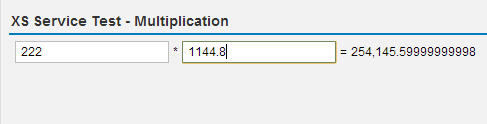

Tutorial: Consume an XSJS Service from SAPUI5
An XS server-side JavaScript (XSJS) application can be used to perform an action linked to an element such as a button or a text box in an SAPUI5 application.
Prerequisites
- You have installed the SAPUI5 tools included in the delivery unit (DU) SAPUI5_1.
- You have installed the SHINE (democontent) delivery unit; this DU contains the XSJS service you want to consume with the SAPUI5 application you build in this tutorial.
Note You might have to adjust the paths in the code examples provided to suit the
folder/package hierarchy in your SAP HANA repository, for example, to
point to the underlying content (demonstration tables and services) referenced in
the tutorial.
Context
Procedure
-
Open the SAP HANA Web-based Development Workbench Editor
tool.
The Editor tool is available on the SAP HANA XS Web server at the following URL: http://<WebServerHost>:80<SAPHANAinstance>/sap/hana/ide/editor
-
Create the basic structure for your application:
- Navigate to the package in which you want to create the SAPUI5 application and from the context menu choose Create Application.
- Choose the Empty application (with XSAccess and XSApp) template.
- Enter a package name, for example, xsjsMultiply, and choose Create.
You now have a basic package structure to hold your application files. The root package for your new application also contains the required application descriptors, which control access to the services and data exposed by the new application. -
Create a subpackage to store the SAPUI5 view and controller files:
- Select the xsjsMultiply package and from the context menu choose New Package.
- Enter a name, for example, xsjsmultiply, and choose Create.
-
Create the SAPUI5 xsjsMultiply view
(view.js):
- Select the xsjsmultiply package and from the context menu choose New File.
- Enter a name, for example, xsjsMultiply.view.js, and choose Create.
-
Create the SAPUI5 xsjsMultiply controller
(controller.js):
- Select the xsjsmultiply package and from the context menu choose New File.
- Enter a name, for example, xsjsMultiply.controller.js, and choose Create.
-
Call the view from the index.html file.
Replace the entire content of the index.html file with the following:You have added the following elements to the index.html file:
<!DOCTYPE HTML> <html> <head> <meta http-equiv="X-UA-Compatible" content="IE=edge"> <script src="/sap/ui5/1/resources/sap-ui-core.js" id="sap-ui-bootstrap" data-sap-ui-libs="sap.ui.commons,sap.ui.table" data-sap-ui-theme="sap_bluecrystal"> </script> <script> sap.ui.localResources("xsjsmultiply"); var view = sap.ui.view({ id: "idxsjsMultiply", viewName: "xsjsmultiply.xsjsMultiply", type: sap.ui.core.mvc.ViewType.JS }); view.placeAt("content"); </script> </head> <body class="sapUiBody" role="application"> <div id="content"></div> </body> </html>- Bootstrap script: SAPUI5 is implemented in JavaScript, so to load the SAPUI5 runtime library sapui-core.js from the SAP HANA repository folder /sap/ui5/1/resources/ on the client you include its bootstrap with a <script> tag. The data-sap-ui-theme attribute specifies the visual design to be applied and the data-sap-ui-libs attribute the UI control libraries to be used.
- Application script: SAPUI5 is based on the model-view-controller paradigm. To create the view and controller, the SAPUI5 runtime needs to know from where to load the related resources (sap.ui.localResources); in this case from the relative sub-folder /xsjsmultiply. In this example, you place the newly created instance of the xsjsMultiply view from the xsjsmultiply sub-folder in an HTML element with the ID content. SAPUI5 supports different view types; here the JS (JavaScript) view type is used.
- HTML body: The HTML element with the ID content, in which you placed the view, needs to be included in the HTML page. To do this, you add a <div> block with id="content" to the HTML body. The <body> attribute class="sapUiBody" defines the SAPUI5 CSS class to be used, which ensures that the page background and some other styles are properly set. The attribute role="application" sets the WAI-ARIA landmark role.
-
Set up the SAPUI5 view displayed in the application user interface.
The SAPUI5 view for this tutorial is specified in the file xsjsMultiply.view.js; it displays a simple UI with two text boxes that you can use to specify the numbers to use for the multiplication action.
sap.ui.jsview("xsjsmultiply.xsjsMultiply", { getControllerName : function() { return "xsjsmultiply.xsjsMultiply"; }, createContent : function(oController) { var multiplyPanel = new sap.ui.commons.Panel().setText("XS Service Test - Multiplication"); var layoutNew = new sap.ui.commons.layout.MatrixLayout({width:"auto"}); multiplyPanel.addContent(layoutNew); var oVal1 = new sap.ui.commons.TextField("val1",{tooltip: "Value #1", editable:true}); var oVal2 = new sap.ui.commons.TextField("val2",{tooltip: "Value #2", editable:true}); var oResult = new sap.ui.commons.TextView("result",{tooltip: "Results"}); var oEqual = new sap.ui.commons.TextView("equal",{tooltip: "Equals", text: " = "}); var oMult = new sap.ui.commons.TextView("mult",{tooltip: "Multiply by", text: " * "}); //Attach a controller event handler to Value 1 Input Field oVal1.attachEvent("liveChange", function(oEvent){ oController.onLiveChange(oEvent,oVal2); }); //Attach a controller event handler to Value 2 Input Field oVal2.attachEvent("liveChange", function(oEvent){ oController.onLiveChange(oEvent,oVal1); }); layoutNew.createRow(oVal1, oMult, oVal2, oEqual, oResult ); return multiplyPanel; } }); -
Set up the SAPUI5 controller functions to handle the UI events.
The code described in this step must be added to the SAPUI5 view controller file xsjsMultiply.controller.js.
-
Define the controller:
sap.ui.controller("xsjsmultiply.xsjsMultiply", { }); -
Add the code that creates an event handler named
onLiveChange.
The onLiveChange function has two parameters: Event and oVal, which are used in the jQuery.Ajax call to the XSJS service at the specified URL. This is the event which is triggered every time the value is changed in either of the text boxes displayed in the application UI.
onLiveChange: function(oEvent,oVal){ var aUrl = '/sap/hana/democontent/epm/services/multiply.xsjs?cmd=multiply'+'&num1=' +escape(oEvent.getParameters().liveValue)+'&num2='+escape(oVal.getValue()); jQuery.ajax({ url: aUrl, method: 'GET', dataType: 'json', success: this.onCompleteMultiply, error: this.onErrorCall }); },If the AJAX call is successful, call a controller event named onCompleteMultiply; if the AJAX call is not successful, call a controller event named onErrorCall. -
Add the code that creates an event handler named
onCompleteMultiply.
The onCompleteMultiply function accepts the response object as an input parameter called myTxt. This text box will contain the result of the multiplication in clear text. Use the sap.ui.core.format.NumberFormat to format the output as an integer and set the value back into the oResult textView.
onCompleteMultiply: function(myTxt){ var oResult = sap.ui.getCore().byId("result"); if(myTxt==undefined){ oResult.setText(0); } else{ jQuery.sap.require("sap.ui.core.format.NumberFormat"); var oNumberFormat = sap.ui.core.format.NumberFormat.getIntegerInstance({ maxFractionDigits: 12, minFractionDigits: 0, groupingEnabled: true }); oResult.setText(oNumberFormat.format(myTxt)); } }, -
Add the code that produces an error dialog if the event produces an
error.
The onErrorCall function displays a message dialog (sap.ui.commons.MessageBox.show) in the event of an error during the multiplication action provided by the XSJS service. The information displayed in the error message is contained in jqXHR.responseText.
onErrorCall: function(jqXHR, textStatus, errorThrown){ sap.ui.commons.MessageBox.show(jqXHR.responseText, "ERROR", "Service Call Error" ); return; }
The complete xsjsMultiply.controller.js file should look like the following example:sap.ui.controller("xsjsmultiply.xsjsMultiply", { onLiveChange: function(oEvent,oVal){ var aUrl = '/sap/hana/democontent/epm/services/multiply.xsjs?cmd=multiply'+'&num1=' +escape(oEvent.getParameters().liveValue)+'&num2='+escape(oVal.getValue()); jQuery.ajax({ url: aUrl, method: 'GET', dataType: 'json', success: this.onCompleteMultiply, error: this.onErrorCall }); }, onCompleteMultiply: function(myTxt){ var oResult = sap.ui.getCore().byId("result"); if(myTxt==undefined){ oResult.setText(0); } else{ jQuery.sap.require("sap.ui.core.format.NumberFormat"); var oNumberFormat = sap.ui.core.format.NumberFormat.getIntegerInstance({ maxFractionDigits: 12, minFractionDigits: 0, groupingEnabled: true }); oResult.setText(oNumberFormat.format(myTxt)); } }, onErrorCall: function(jqXHR, textStatus, errorThrown){ sap.ui.commons.MessageBox.show(jqXHR.responseText, "ERROR", "Service Call Error" ); return; } }); -
Define the controller:
- Save all files.
-
Test your “xsjsMultiply” SAPUI5 application in a Web browser.
Select the index.html file and choose
 (Run)
in the toolbar.
(Run)
in the toolbar.